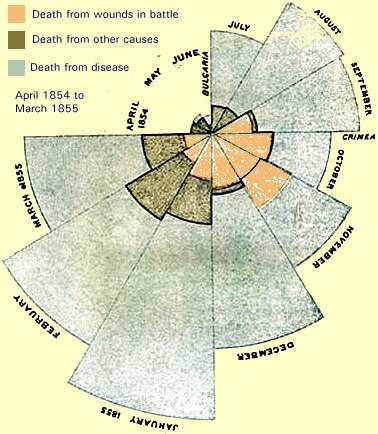

The Nightingale or Polar Diagram was developed by statistician and medical reformer Florence Nightingale. During the Crimean War in 1854, Nightingale arrived in Turkey to work as a nurse. She took meticulous notes of the causes of death of the soldiers and following the war, Nightingale released her 'Notes on Matters Affecting the Health, Efficiency and Hospital Administration of the British Army'. In these she included the polar diagram to illustrate the various causes of death of soldiers during the war starting July 1854 through the end of the following year. Nightingale's diagram, shown in the image below, highlights that many more soldiers died from treatable diseases than battlefield wounds.
The Nightingale chart, as shown above, resembles a pie chart. Each sector has the same angle and thus, each category is divided into equal segments. The segments advance in a clockwise manner to plot a cyclic phenomena. The diagram above shows the number of deaths in each month after the troops landed in the Crimea. The size of each segment is determined by its distance from the center. The segments in the diagram above begin reaching outward in the radial direction as the number of deaths increased. An interactive reproduction of Florence Nightingale's original diagram can be found here.
A polar diagram can be created in excel by combing a donut chart and XY scatter chart. The chart can also be created using R as demonstrated here. The chart is laid out on a polar coordinate system. Rings of the polar grid can be used as a scale to plot the size of the segment by changing the radius. However, the value of a segment is represented by its area rather than the radius (see diagram below). Scaling data using radius instead of area may mislead the reader since the eyes inherently focus on area. However, this also means that the outer segments of the diagram are given more emphasis because of their larger area, thus, disproportionately representing increases in value. Another common issue with the polar area diagram is that subtle differences are hard to see. Hence, they can be better used when demonstrating data that contains exact numbers.
Other than being used to record the number of deaths and their causes in war, the polar area diagram can also be used to demonstrate other types of data like demographic data and survey responses, to make comparisons and assess data over time. The chart on this site shows the female population above 15 years in the US. Another example of the polar area diagram can be found here, which shows the responses of twenty-five people to three questions in a survey. The site also explains how the chart can be created in excel. Another example use of the polar area diagram is exhibited on this blog. The author created an interactive visualization for the factors that affect the management of fisheries. The chart shows how the different stakeholders may prioritize the various factors. The polar area diagram, therefore, is a visualization that can be used to display more complex data that cannot be exhibited using other simpler pie and donut charts.
The following resources were used to assist in the explanation given above:
Lienhard, J. Nightingale's Graph. Retrieved February 8, 2017, from http://www.uh.edu/engines/epi1712.htm
Nightingale Rose Chart. Retrieved February 8, 2017, from http://www.datavizcatalogue.com/methods/nightingale_rose_chart.html